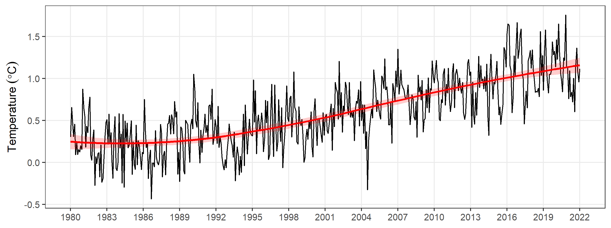
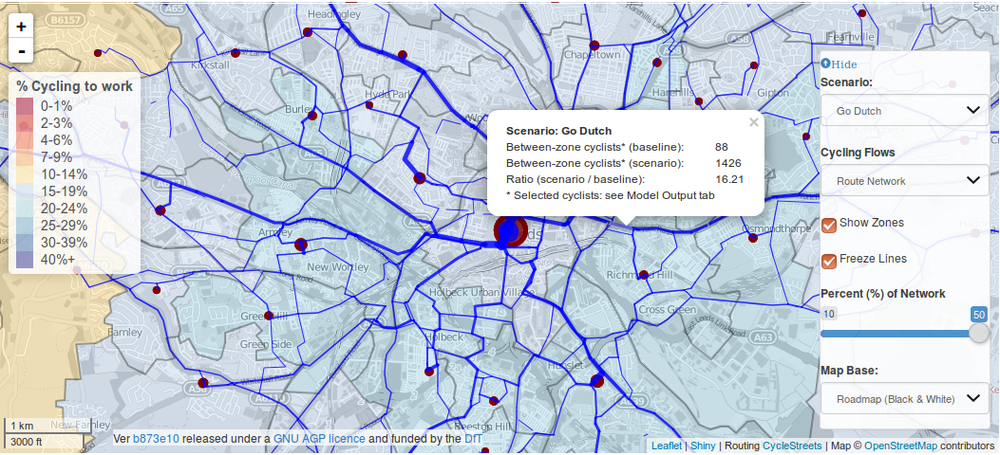

Ng’ara
Projects
Dashboards
Masumbuko Semba
Categories
All
(5)
analysis
(3)
code
(3)
news
(4)
spatial
(2)

Forecasting Rising Temperature with prophet package in R
code
analysis
spatial
Time-series analysis aims to analyse and learn the temporal behaviour of datasets over a period
August 13, 2022
Masumbuko Semba
Teacher’s Employment Allocations by LGA
news
code
analysis
The visual impact of the flow diagram has caught the form of looking…….
August 11, 2022
Masjumbuko Semba

Spatial Data is Maturing in R
news
code
analysis
spatial
R is particularly powerful for spatial statistical analysis and quantitative researchers in particular may find R more useful than GIS desktop applications
August 8, 2022
Masjumbuko Semba
Data Science at the frontline
What’s get to consider
news
Data science has become an essential element for companies that want to …………….
August 4, 2022
Masjumbuko Semba
Welcome to Coding in R
news
Coding is now in blazing flame. Welcome!
August 3, 2022
Daniel Semba
No matching items
This blog is brought to you by
https://semba.netlify.app